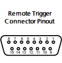
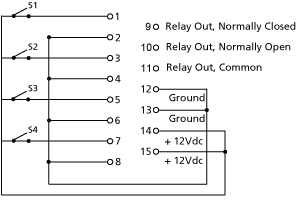

This section allows you to adjust settings for MIDI show control, time code (MIDI or SMPTE), analog, and serial functions. For more information on using show control with your system, see About Eos Family Show Control
This button is used to control whether your console can receive SMPTE time code. Choosing “Disabled” will disable all time code lists that have a SMPTE source. The default for this setting is “Enabled”.
This button allows you to configure how many frames need to be synced before time code starts running. Frames can be from 1-30. Default is 2 frames.
This button toggles the setting for receiving MIDI Show Control from an external source between “Enabled” and “Disabled”. The default setting is “Disabled”.
This setting allows you to choose the devices from which the console will receive MIDI. When set, the console will respond to MSC data from any Net3 gateway that has a matching “ACN MIDI Rx ID.” Gateways will send the MIDI data over an ACN connection. When built-in MIDI ports are available, the setting needs to match or at least contain the MIDI Rx ID.
For Example:
MIDI Cue List specifies the cue list that the console will use to send MSC data. If left blank and MSC Tx is enabled, all cue lists will generate MSC events. Otherwise, only the particular list (or lists) selected will fire MSC events.
This setting, when enabled, allows the console to send MSC messages for actions taken on the console, such as cue actions, macros firing, and submaster bumps. The default setting is “Disabled”.
As above, but for MIDI Time Code instead of SMPTE. The default for this setting is “Enabled”.
Also known as a “device ID” this setting configures the MIDI channel for the console to receive MIDI Show Control information. Only MSC data with the same device ID will be received. A device ID can be from 0-126. MSC commands can be sent to ID 127, which is the All Call device ID. While Eos cannot be set to ID 127, it will respond to commands sent to the All Call device ID.
For Example:
Also known as “Device ID” this setting allows you to set the device ID with which your console will transmit MIDI Show Control information. A device ID can be from 0-127. If set to 127, the console will transmit MSC data to all devices (All Call).
For Example:
This setting allows you to choose the devices through which the console will send MIDI data. When set, the console will transmit MSC data from any Net3 gateway that has a matching “ACN MIDI Tx ID.” The console will then send the MIDI data over an ACN connection to the gateways. When built-in MIDI ports are available, the setting needs to match or at least contain the MIDI Tx ID.
For Example:
This is a master setting for receiving analog inputs from a Net3 I/O Gateway or the built-in I/O port (when available). When disabled, it will no longer trigger any analog input actions on any event lists. Default is “Enabled”.
This is a master setting for triggering external relays from a Net3 I/O Gateway or the built-in I/O port (when available). When disabled, will no longer affect any external relays normally triggered from the desk via cues, submasters, or macros. The default is “Enabled”.
Allows you to set the Group and Address In values for the remote trigger input on the back of your console. The contact closure only reports on/off even though it is considered an analog input.
Note: The contact closures require DC voltage, which is supplied by the console on pins 14 and 15. See the diagram below.
Allows you to assign the Relay Out Source ID and the Relay Out Address.


Globally enables receiving OSC.
This setting specifies the UDP port that the console will listen to for OSC receiving strings. Multiple ports can be assigned. A space needs to be used to separate the addresses.
Note: ETC recommends using 8000 and 8001 respectively for port numbers. Remember that when setting port numbers on your external device that they should be set to the opposite of what Eos is set. For example, if {OSC TX Port Number} on Eos is set to 8000, then the RX (incoming) port on your external device needs to be set to 8000, and vice versa.
Allows the user to specify a different incoming OSC string format for integration with other applications. Use %1 in the string format as cue number and %2 as the cue list number.
Globally enables transmitting OSC.
This sets the UDP destination port to which the console will send OSC strings. Multiple ports can be assigned. A space needs to be used to separate the addresses.
Allows the user to specify a different outgoing OSC string format for integration with other applications. Use %1 in the string format as cue number and %2 as the cue list number.
This sets the destination IP address or addresses to which the console will send OSC strings.
Note: Be careful when using a network with a DHCP server. If your external device reboots or is issued a new IP address from a DHCP server, it will no longer receive OSC strings from Eos until you change this setting to match your new IP address at your external device.
Allows use of OSC USB devices, such as Lighthack.
This setting will enable receiving strings on all Serial RX formats and OSC inputs.
This setting allows you to choose the Net3 I/O Gateways through which the console will receive serial strings. When set, the console will receive serial from any Net3 I/O Gateway that has a matching “ACN Serial Group ID.” The gateway will send serial data over an ACN connection to the console. This only affects serial traffic from I/O gateways and not network UDP messages, ACN strings, or OSC. Serial Group IDs can be from 1-32. Multiple group IDs can be selected by using [Thru] and [+].
Allows the user to specify a comma separated list of names for receiving strings, for example, from Paradigm.
This setting specifies the UDP port that the console will listen to for receiving strings. Multiple ports can be assigned. A space needs to be used to separate the addresses.
This settings will enable sending strings on all Serial TX and OSC formats.
This setting allows you to choose the Net3 I/O Gateways through which the console will transmit serial string data. When set, the console will transmit serial to any Net3 I/O Gateway that has a matching “ACN Serial Group ID.” The console will send the serial data over an ACN connection to the gateways. This only affects serial traffic to I/O gateways and not network UDP messages, ACN strings, or OSC. Serial Group IDs can be from 1-32. Multiple group IDs can be selected by using [Thru] and [+].
Allows the user to specify a list of specific comma separated names of devices to send strings tom for example, for use with Paradigm.
Setting for the UDP destination port that the console will send strings. Multiple ports can be assigned. A space needs to be used to separate the addresses.
Sets the destination IP address or ACN devices supporting the ACN String EPI that the console will use to send strings. This can contain either an IP address for UDP string destinations or ACN device names.. A combination of UDP and ACN devices are not supported. Please see String Interface for more specific configuration information.
When enabled, this setting will cause the console to send serial strings when certain actions happen at the console. See Sending From User Events .